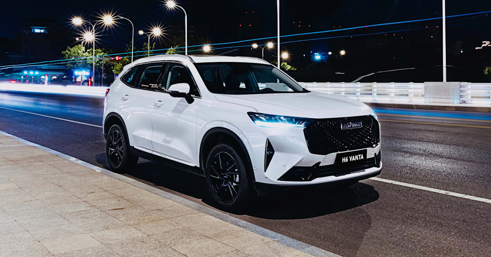
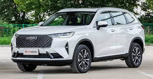

GALLERY
HAVAL
2022 H6-Haval brand has been making significant inroads in the Australian market with its range of SUVs. They’ve improved leaps and bounds from GWM’s past efforts, banishing memories of the old Great Wall X-Series with punchy engines, a long list of safety equipment, and keen pricing. The mid-sized Haval H6, for example, starts at $32,990 drive-away. That’s cheaper than the before on-roads price of most rivals’ base models.
MERCEDES

 2022 G-Class. When it comes to off-road capability and luxury pedigree, the 2022 Mercedes-Benz G-class is in a class of its own. Also known as the Geländewagen, it's essentially a Ford Bronco or Jeep Wrangler for the rich and famous.
2022 G-Class. When it comes to off-road capability and luxury pedigree, the 2022 Mercedes-Benz G-class is in a class of its own. Also known as the Geländewagen, it's essentially a Ford Bronco or Jeep Wrangler for the rich and famous.
TESLA

 The 2022 Tesla Model Y Long Range starts at $64,990. The Performance model begins at $67,990. The destination fee is $1,200, and there's also a non-refundable $250 order fee that's due the day you purchase a Tesla Model Y.
The 2022 Tesla Model Y Long Range starts at $64,990. The Performance model begins at $67,990. The destination fee is $1,200, and there's also a non-refundable $250 order fee that's due the day you purchase a Tesla Model Y.
TOYOTA

 Toyota's major changes for 2022 include an all-new Corolla Cross small SUV and redesigns of its full-size Tundra pickup truck and GR86 sports coupe. Elsewhere, the lineup gets more incremental changes along with several new special editions, including Toyota's blacked-out Nightshade Edition.
Toyota's major changes for 2022 include an all-new Corolla Cross small SUV and redesigns of its full-size Tundra pickup truck and GR86 sports coupe. Elsewhere, the lineup gets more incremental changes along with several new special editions, including Toyota's blacked-out Nightshade Edition.
VOLKSWAGEN

 Volkswagen is set to launch the 2021 Volkswagen Golf R in Europe with two body styles and a 2.0-liter turbocharged four-cylinder engine, and 0-60 time. However, the Volkswagen Golf R will not be returning to the United States this year. The next generation will hit the market for the 2022 model year.
Volkswagen is set to launch the 2021 Volkswagen Golf R in Europe with two body styles and a 2.0-liter turbocharged four-cylinder engine, and 0-60 time. However, the Volkswagen Golf R will not be returning to the United States this year. The next generation will hit the market for the 2022 model year.